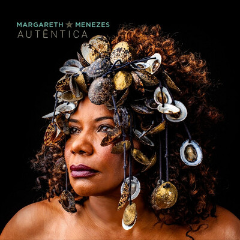
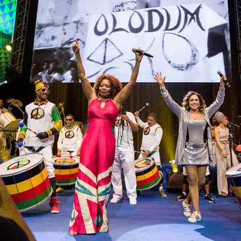
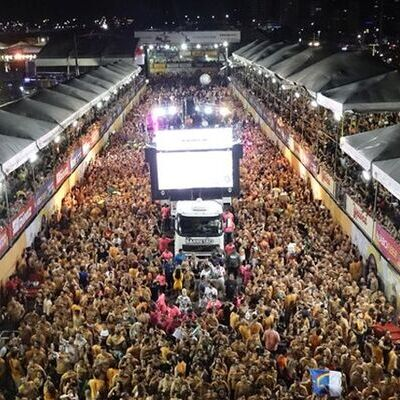
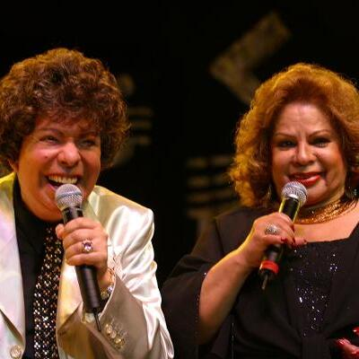
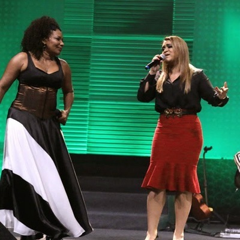
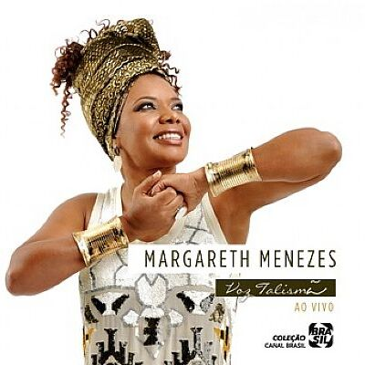

Quem Somos
Há treze anos no mercado, a Pedra do Mar é uma produtora artística que une o dinamismo e o entusiasmo de jovens produtores culturais com a experiência de profissionais. Em seus projetos, a empresa compartilha o compromisso com a qualidade e eficiência aliado à responsabilidade sócio-cultural.
Com uma equipe capacitada e preparada para acompanhar as diversas transformações do mercado cultural, onde se percebe que é de extrema necessidade a constante reciclagem, a Pedra do Mar oferece os melhores serviços no campo das atividades artísticas.
A empresa possui ainda um excelente relacionamento com os departamentos públicos e privados ligados à cultura em nosso país. Essas capacidades vêm trazendo várias manifestações de reconhecimento por parte do público e de profissionais especializados.
Entre as principais atividades realizadas, a Pedra do Mar faz a assessoria empresarial na carreira da interprete e compositora Margareth Menezes, promovendo shows nacionais e internacionais da artista ao longo de 13 anos.
É com esse espírito de comprometimento com o mercado da cultura que a Pedra do Mar vem desenvolvendo suas atividades.
Serviços
-
Gestão de Carreira
Cuidamos da carreira de artistas da música, fazendo planejameno estratégico, construção de projetos, venda de shows e toda a produção
-
Elaboração de Projetos
Elaboramos projetos culturais para captação de recursos com a iniciativa privada e com mecanismos públicos de fomento, como editais e leis
-
Produção Executiva
Temos o know-how necessário para realizar a produção executiva, desde o pré-produção até a prestação de contas, sem preocupações
Produções
-
CD Autêntica
Álbum de músicas inéditas de Margareth Menezes, lançado em 2019
-
MM 30 Anos
Show em comemoração aos 30 anos de carreira de Margareth Menezes, em 2018
-
Trio Afropop
Trio de Margareth Menezes, que desfilou no carnaval de Salvador em 2018, 2019, 2020
-
Ângela e Cauby
Show de Ângela Maria e Cauby Peixoto no TCA, em Salvador (2014)
-
Para Gil e Caetano
DVD de Margareth Menezes em homenagem a Gilberto Gil e Caetano Veloso, em 2014
-
DVD Voz Talismã
DVD de comemoração de 25 anos de carreira de Margareth Menezes (2012)